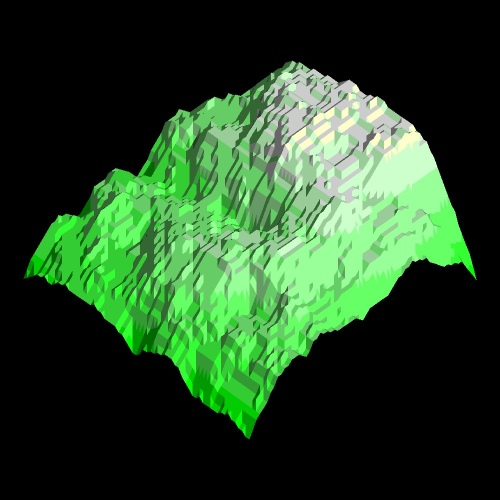
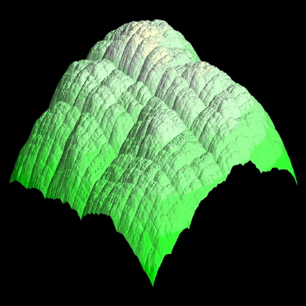

Les fractales
TPE : Baptiste Drapeaud, Gaëtan Milhomme, Hugues Wattez
Nous ne le savons pas mais nous sommes entourés de fractale et beaucoup de choses de la nature sont des fractales comme par exemples les côtes rocheuses, les montagnes, les nuages, les éclairs Nous allons prendre trois exemples de fractales : les cotes, les montagnes et les éclairs.
Lune des côtes rocheuses la plus connue est bien-sûr la côte de Bretagne, cest Benoît Mandelbrot le célèbre mathématicien français qui découvre que la côte est sous forme fractale car celle-ci représente les mêmes motifs ou mêmes courbes quelle que soit léchelle, telle la courbe de Van Koch, ci-contre.
Depuis, beaucoup de chercheurs veulent mesurer la cote mais ceux-ci ne sont pas daccord sur les mesures car cette côte est impossible à mesurer car tout dépend de l'instrument utilisé, de la finesse de l'observation, et en définitif, de l'observateur lui-même. Tout n'est qu'une question d'échelle.
Les montagne sont aussi de forme fractale : car une montagne est composée de plusieurs petites montagnes elles-mêmes composées de pics ou de cols, cest le principe de lautosimilarité que lon retrouve dans le flocon de Van Koch.
Ceci est plus flagrant vue davion :
Exemple avec environ 8 000 triangles |
Exemple avec environ 2 millions de triangles |
Les éclairs sont des fractales car un éclair se forme grâce à la pluie, en effet nous savons tous que leau est conductrice de lélectricité et bien le but dun éclair est de passer de goutte deau en goutte deau pour toucher le sol mais à un moment des gouttes deau peuvent être a équidistances de léclaire celui-ci se découpe et a force de se découper, il forme une fractale. On peut le comparer a une partie de l'ensemble de Mandelbrot :
On peut donc conclure que les fractales en géologie ont une aire finie puisquelles tiennent dans une surface mais infinie car le périmètre est infinie.